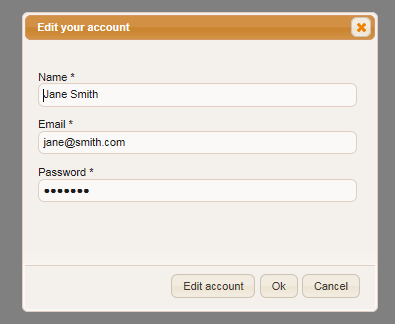
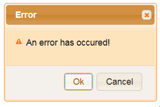

The WCAG 2.0(Web Content Accessibility Guidelines) were developed by
the W3C and explain how to make web content accessible to people with
disabilities. WCAG 2.0 has a total number of 12 guidelines that are
grouped in four principles for creating accessible web content:
Perceivable
Operable
Understandable
Robust
For each of these guidelines success criterias and techniques how to
accomplish were developed. By this web developers can check the level
of conformance of their content to the WCAG 2.0. There are 3 levels of
conformance, starting from A(lowest), AA to AAA(highest).
Lets take a deeper look in the four priciples of the WCAG2.0.
Principle 1:Perceivable
Information and user interface components must be presentable to users
in ways they can perceive. This means that users must be able to
perceive the information being presented (it can't be invisible to all
of their senses).
An example for this principle is missing alternative text for
images. Alternative text provides a textual alternative to non-text
content in web pages. Alternative text serves several functions:
It is read by screen readers in place of images allowing the
content and function of the image to be accessible to those with
visual or certain cognitive disabilities.
It is displayed in place of the image in browsers if the
image file is not loaded or when the user has chosen not to view
images.
It provides a semantic meaning and description to images
which can be read by search engines or be used to later determine the
content of the image from page context alone.
Take a look at this image link:
For a sighted person it is clear that this link will take the
user to a shop where useres are able to buy items. Web pages are
created with Hyper Text Mark-up Language, commonly referred to as HTML.
Let's take a look at the source HTML that created this image link:
<a href=""><img alt=""
src="ButtonImage.png"></a>
As you can see the the alt-Tag(alt="") in the image element
is empty, providing no information for the screenreader of a blind
person. Therefore blind people would just see this link to an unknown
target. This is not only bad for the blind person but also bad for the
maintainors of this webshop as he would lose potential customers.
Another example are inaccesible CAPTCHA's. CAPTCHA is the
abbreviation for "Completely Automated Public Turing test to Tell
Computers and Humans Apart". The most common example of CAPTCHA is
distorted images of text used as part of a login or registration
process as seen in this example:
This example CAPTCHA uses randomly generated images without
text or speech alternatives so therefore blind people that use a
screenreader to operate a computer or other people who are unable to
access content of the captcha cannot solve the CAPTCHA. Such CAPTCHAS
are very common in registration forms. If they are inaccessible
maintainers of webpages would block users that cannot solve the
CAPTCHA.
Principle 2:Operable
User interface components and navigation must be operable. This means
that users must be able to operate the interface (the interface cannot
require interaction that a user cannot perform).
An example for this principle would be that the userinterface
must be operable with the user of a keyboard alone, as it is for many
people(e.g. people with physical disabilies) not possible to use a
pointing device like the mouse. HTML provides a lot of standard
elements like buttons, input fields and paragraphs to give developers
of web-pages to create webcontent for different purposes. When
developers of web-pages use those elements for their designated
purpose, and refer to accessibility standards like the WCAG 2.0, people
that cannot use the mouse are able to operate web-pages just with the
keyboard alone.
Look at the following example buttons:
Button 2 Try to navigate the focus with your keyboard using the
Tabulator-key to the button with the label "Button 1" and press the
enter key to activate it. When finished try the same thing with the
button labelled as "Button 2".
You may notice that you are not able to focus the "Button 2"
with your keyboard. The second button is actually only a text-span that
was styled and programmed to appear as a button. Therefore it cannot be
focused by the keyboard and as a result not operated by a user that is
not able to use a mouse. HTML would also provide the tools to make such
a span keyboard accessible and developers could also give it a proper
role, which would be the button role in this example. However a better
way would be to take the proper widget for the element in the first
place and not to adjust another widget to fulfil a different purpose.
Principle 3:Understandable
Information and the operation of user interface must be understandable.
This means that users must be able to understand the information as
well as the operation of the user interface. Besides that user
interfaces should be built in a way to help users to avoid and to
correct mistakes. We all make mistakes and errors and we all expect
from ICT that it supports avoiding or recovering from mistakes. Here is
an example for a bad userinterface:

For useres it is unclear what the "OK"-button really does.
Will the changes to the account made be applied or not? Another example
can be seen in the following image:

This message just informs the user that something went wrong
but gives no indication for the reason of that error nor does it help
the user to find the error. Therefore the user is left alone to guess
what he has made wrong.
Robust
Content must be robust enough that it can be interpreted reliably by a
wide variety of user agents, including assistive technologies. In this
case user agents are any software that retrieves and presents Web
content, like browsers (Chrome, Firefox, Safari...), media players
(Quicktime, Realplayer, Windows Media Playe...), plugins (e.g. those
that help your browser perform specific functions), and, other
programs, including assistive technologies (pointers, magnifiers...).
Websites must therefore be created to support all this technologies.
License Terms, Acknowledgment & Disclaimer
Author/copyright: Peter Heumader, Johannes Kepler Universität Linz, 2015
This resource (including the referenced videos and the captions file) is hereby made available to the public under the
terms of the Creative Commons by Attribution (CC-BY 4.0) license.
The creation of this resource has been partially funded by the ERASMUS+ grant program of the European Union under grant
no. 2014-1-DE01-KA203-000679 (MOOC Accessibility Partnership).
Neither the European Commission nor the project's national funding agency DAAD are responsible for the content or liable for any losses or damage resulting of the use of these resources.